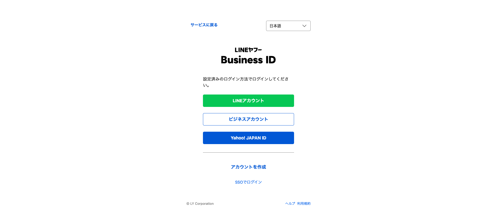
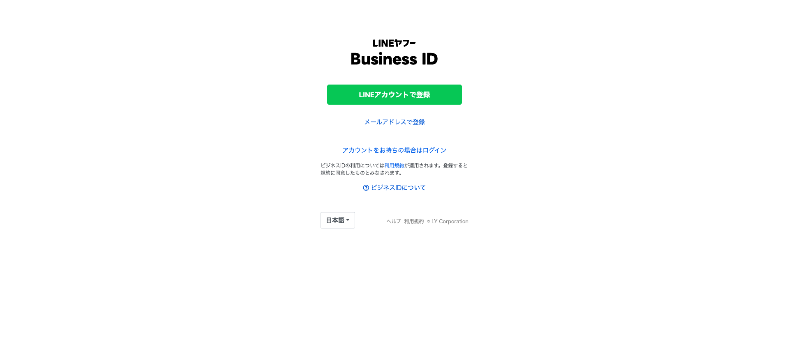
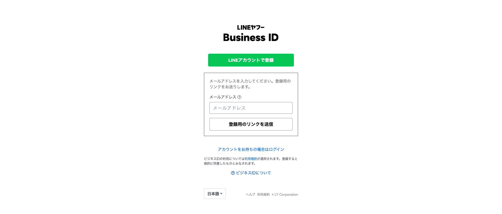
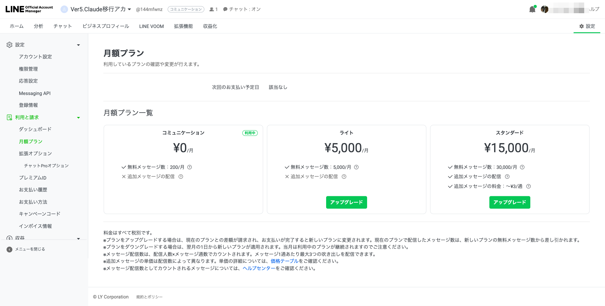
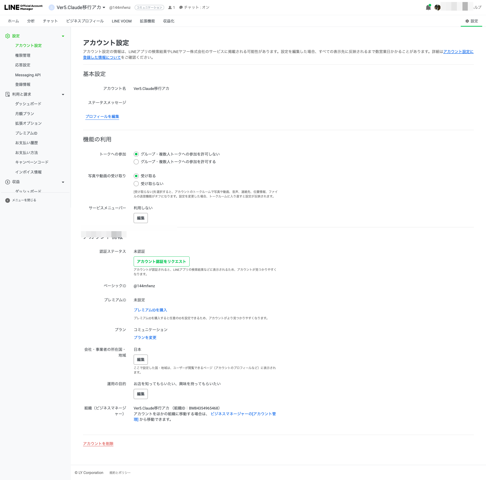
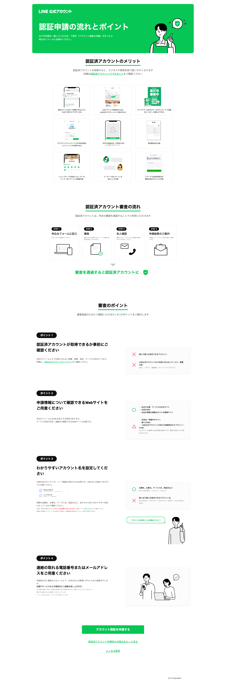

ブラウザで manager.line.biz を開いてください。
以下のような画面が表示されます。
「アカウントを作成」をタップしてください。

▲ この画面が表示されたら「アカウントを作成」をタップ
登録方法の選択画面が表示されます。
状況に合わせて選んでください。

▲ 登録方法の選択画面
メールアドレスを入力して「登録用のリンクを送信」をタップしてください。

▲ メールアドレスを入力する画面
入力したメールアドレス宛に登録リンクが届きます。
メール内のリンクをタップし、パスワードを設定すれば登録完了です。
登録が完了したら、村田までご連絡ください。
その後の設定作業をサポートします。
左メニューの「利用と請求」を開き、「月額プラン」をタップします。

▲ プラン変更ページ。「ライト」の「アップグレード」ボタンをタップ
「ライト」の「アップグレード」ボタンをタップすると、支払い方法の選択画面が表示されます。
支払い情報を入力して確認画面で「変更する」をタップすれば完了です。
manager.line.biz にログインし、お店のアカウントをタップして選択してから、「設定」→「アカウント設定」を開きます。

▲「アカウント情報」欄に「認証ステータス」があります
「アカウント情報」の「認証ステータス」欄にある
「アカウント認証をリクエスト」ボタンをタップします。
認証申請の流れと注意事項が表示されます。内容を確認してください。

▲ 審査の流れとポイントが案内されます
ページ下部の「アカウント認証を申請する」ボタンをタップし、必要情報を入力して申請を完了してください。